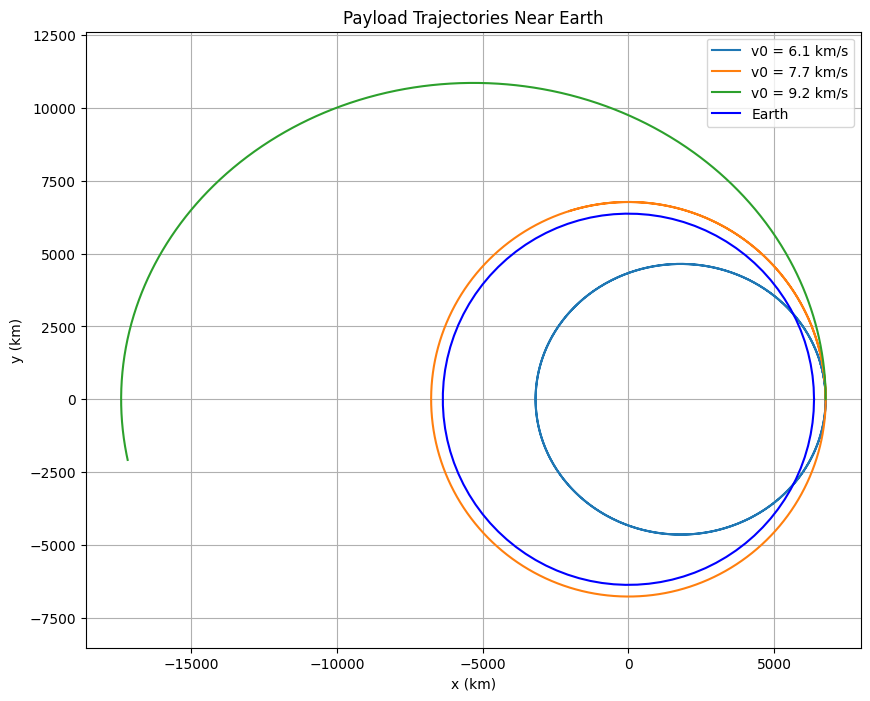

Problem 2: Escape Velocities and Cosmic Velocities
Detailed Solution in a Single Black Box
Detailed Step-by-Step Solution: Escape Velocities and Cosmic Velocities
Step 1: Define the First, Second, and Third Cosmic Velocities with Physical Meaning
- First Cosmic Velocity (Orbital Velocity): This is the speed required for an object to maintain a circular orbit around a celestial body at a radius \(r\) from the body’s center. It balances the gravitational force with the centripetal force needed for circular motion. For a low orbit (just above the surface), \(r\) is approximately the body’s radius \(R\). This velocity is crucial for satellites to achieve stable orbits, such as those in low Earth orbit (LEO).
- Second Cosmic Velocity (Escape Velocity): This is the minimum speed an object needs to escape the gravitational pull of a celestial body, reaching infinity with zero residual velocity. It’s derived using energy conservation, ensuring the object’s kinetic energy overcomes the gravitational potential energy. This velocity is independent of the launch direction (ignoring atmospheric effects) and is essential for missions leaving a planet, such as lunar or interplanetary travel.
- Third Cosmic Velocity (Interstellar Escape Velocity): This is the speed required to escape the gravitational influence of a star system (e.g., the Solar System) and travel into interstellar space. It assumes the object starts from an orbit around the star (e.g., Earth’s orbit around the Sun). The object must first escape the planet’s gravity and then achieve the additional speed to escape the star’s gravity from that orbital position.
Step 2: Mathematical Derivations and Parameters
2.1 First Cosmic Velocity (Circular Orbit)
Consider an object of mass \(m\) in a circular orbit around a celestial body of mass \(M\) at radius \(r\) (distance from the center). The gravitational force provides the centripetal force required for circular motion. The gravitational force is:
$$
F_{\text{grav}} = \frac{G M m}{r^2}
$$
where \(G\) is the gravitational constant, \(M\) is the mass of the celestial body, and \(m\) is the mass of the orbiting object. The centripetal force required for circular motion at speed \(v_1\) is:
$$
F_{\text{centripetal}} = \frac{m v_1^2}{r}
$$
Equate the two forces:
$$
\frac{G M m}{r^2} = \frac{m v_1^2}{r}
$$
Cancel \(m\) (since \(m \neq 0\)):
$$
\frac{G M}{r^2} = \frac{v_1^2}{r}
$$
Multiply both sides by \(r\) to eliminate the denominator on the right:
$$
\frac{G M}{r} = v_1^2
$$
Solve for \(v_1\):
$$
v_1 = \sqrt{\frac{G M}{r}}
$$
For an orbit just above the surface, \(r \approx R\), where \(R\) is the radius of the celestial body. Thus, the first cosmic velocity at the surface is:
$$
v_1 = \sqrt{\frac{G M}{R}}
$$
2.2 Second Cosmic Velocity (Escape Velocity)
To escape the gravitational pull, the object’s kinetic energy must equal the gravitational potential energy required to reach infinity. The gravitational potential energy at distance \(r\) from the center is:
$$
U = -\frac{G M m}{r}
$$
At infinity, the potential energy is zero (\(U = 0\)). The kinetic energy of the object at launch is:
$$
K = \frac{1}{2} m v_2^2
$$
Using conservation of mechanical energy (initial energy at \(r\) equals energy at infinity):
$$
K + U = 0 \quad (\text{at infinity, total energy is zero for minimum escape})
$$
$$
\frac{1}{2} m v_2^2 - \frac{G M m}{r} = 0
$$
Cancel \(m\):
$$
\frac{1}{2} v_2^2 = \frac{G M}{r}
$$
Multiply both sides by 2:
$$
v_2^2 = \frac{2 G M}{r}
$$
Solve for \(v_2\):
$$
v_2 = \sqrt{\frac{2 G M}{r}}
$$
At the surface (\(r = R\)):
$$
v_2 = \sqrt{\frac{2 G M}{R}}
$$
Compare with the first cosmic velocity:
$$
v_2 = \sqrt{\frac{2 G M}{R}} = \sqrt{2} \sqrt{\frac{G M}{R}} = \sqrt{2} v_1
$$
The escape velocity is \(\sqrt{2}\) times the orbital velocity at the same radius.
2.3 Third Cosmic Velocity (Escape from the Solar System)
This velocity is more complex, as it involves escaping the Sun’s gravity from Earth’s orbit around the Sun. First, the object must escape Earth’s gravity (using \(v_2\)). Then, at Earth’s orbital distance from the Sun (\(r_{\text{Earth-Sun}} = 1\,\text{AU}\)), it must achieve the escape velocity from the Sun’s gravitational field.
- Escape Velocity from the Sun at Earth’s Orbit: The Sun’s mass is \(M_{\text{Sun}}\), and the distance is \(r_{\text{Earth-Sun}}\). Using the escape velocity formula: $$ v_{\text{esc,Sun}} = \sqrt{\frac{2 G M_{\text{Sun}}}{r_{\text{Earth-Sun}}}} $$
- Earth’s Orbital Velocity Around the Sun: Earth orbits the Sun in a nearly circular orbit, so its orbital velocity is the first cosmic velocity with respect to the Sun: $$ v_{\text{Earth}} = \sqrt{\frac{G M_{\text{Sun}}}{r_{\text{Earth-Sun}}}} $$
- Third Cosmic Velocity: The third cosmic velocity \(v_3\) is the additional speed (relative to Earth) needed to increase the object’s speed from \(v_{\text{Earth}}\) to \(v_{\text{esc,Sun}}\), assuming the object is launched in the direction of Earth’s orbital motion. The total speed required at Earth’s orbit is \(v_{\text{esc,Sun}}\), but Earth is already moving at \(v_{\text{Earth}}\), so: $$ v_3 = v_{\text{esc,Sun}} - v_{\text{Earth}} $$ Substitute the expressions: $$ v_3 = \sqrt{\frac{2 G M_{\text{Sun}}}{r_{\text{Earth-Sun}}}} - \sqrt{\frac{G M_{\text{Sun}}}{r_{\text{Earth-Sun}}}} $$ Factor out the common term: $$ v_3 = \sqrt{\frac{G M_{\text{Sun}}}{r_{\text{Earth-Sun}}}} \left( \sqrt{2} - 1 \right) $$ Since \(\sqrt{2} - 1 \approx 0.414\), the third cosmic velocity is approximately 41.4% of the Sun’s orbital velocity at Earth’s distance.
2.4 Parameters Affecting Velocities
- \(M\): Mass of the celestial body. A larger \(M\) increases both \(v_1\) and \(v_2\) (since they are proportional to \(\sqrt{M}\)).
- \(r\): Distance from the center (or radius \(R\) at the surface). A larger \(r\) decreases the velocities (since they are proportional to \(\frac{1}{\sqrt{r}}\)).
- \(G\): Gravitational constant, a universal constant.
For the third cosmic velocity, additional parameters are \(M_{\text{Sun}}\) (Sun’s mass) and \(r_{\text{Earth-Sun}}\) (Earth’s orbital radius), which affect the Sun’s escape velocity and Earth’s orbital velocity.
Step 3: Calculate and Visualize for Earth, Mars, and Jupiter
Let’s compute these velocities for Earth, Mars, and Jupiter using their masses and radii:
- Earth: \(M = 5.972 \times 10^{24}\,\text{kg}\), \(R = 6371\,\text{km}\)
- Mars: \(M = 6.417 \times 10^{23}\,\text{kg}\), \(R = 3390\,\text{km}\)
- Jupiter: \(M = 1.898 \times 10^{27}\,\text{kg}\), \(R = 69911\,\text{km}\)
- Sun: \(M_{\text{Sun}} = 1.989 \times 10^{30}\,\text{kg}\), \(r_{\text{Earth-Sun}} = 1.496 \times 10^{11}\,\text{m}\) (1 AU)
- \(G = 6.674 \times 10^{-11}\,\text{m}^3 \text{kg}^{-1} \text{s}^{-2}\)
Python Code: Cosmic Velocities Calculation and Visualization
import numpy as np
import matplotlib.pyplot as plt
# Constants
G = 6.674e-11 # Gravitational constant (m^3 kg^-1 s^-2)
M_sun = 1.989e30 # Mass of the Sun (kg)
r_earth_sun = 1.496e11 # Earth-Sun distance (m)
# Celestial bodies data: [mass (kg), radius (m)]
bodies = {
"Earth": [5.972e24, 6371e3],
"Mars": [6.417e23, 3390e3],
"Jupiter": [1.898e27, 69911e3]
}
# Calculate velocities
v1_values = [] # First cosmic velocity (orbital)
v2_values = [] # Second cosmic velocity (escape)
v3_value = None # Third cosmic velocity (from Earth’s orbit)
for body, (M, R) in bodies.items():
# First cosmic velocity
v1 = np.sqrt(G * M / R) / 1000 # Convert to km/s
v1_values.append(v1)
# Second cosmic velocity
v2 = np.sqrt(2 * G * M / R) / 1000 # Convert to km/s
v2_values.append(v2)
# Third cosmic velocity (from Earth’s orbit around the Sun)
v_esc_sun = np.sqrt(2 * G * M_sun / r_earth_sun) # Escape velocity from Sun at 1 AU
v_earth = np.sqrt(G * M_sun / r_earth_sun) # Earth’s orbital velocity
v3 = (v_esc_sun - v_earth) / 1000 # Convert to km/s
v3_value = v3
# Visualization
bodies_names = list(bodies.keys())
x = np.arange(len(bodies_names))
plt.figure(figsize=(10, 6))
plt.bar(x - 0.2, v1_values, 0.4, label="First Cosmic Velocity (Orbital)", color="blue")
plt.bar(x + 0.2, v2_values, 0.4, label="Second Cosmic Velocity (Escape)", color="orange")
plt.axhline(y=v3_value, color="green", linestyle="--", label=f"Third Cosmic Velocity (from Earth) = {v3_value:.2f} km/s")
plt.xticks(x, bodies_names)
plt.xlabel("Celestial Bodies")
plt.ylabel("Velocity (km/s)")
plt.title("Cosmic Velocities for Different Celestial Bodies")
plt.legend()
plt.grid(True)
plt.show()
# Print values
print("Cosmic Velocities (km/s):")
for i, body in enumerate(bodies_names):
print(f"{body}:")
print(f" First Cosmic Velocity: {v1_values[i]:.2f} km/s")
print(f" Second Cosmic Velocity: {v2_values[i]:.2f} km/s")
print(f"Third Cosmic Velocity (from Earth’s orbit): {v3_value:.2f} km/s")

Step 4: Importance in Space Exploration
- First Cosmic Velocity: Essential for launching satellites into orbit. For Earth, \(v_1 \approx 7.9\,\text{km/s}\) at the surface, but at typical LEO altitudes (e.g., 400 km), it’s slightly less due to the larger \(r\). Satellites like those in the International Space Station (ISS) orbit at about 7.6 km/s.
- Second Cosmic Velocity: Critical for missions escaping a planet’s gravity. For Earth, \(v_2 \approx 11.2\,\text{km/s}\). The Apollo missions needed to exceed this to reach the Moon. For Jupiter, the high escape velocity (59.5 km/s) makes missions like Juno challenging, requiring significant fuel.
- Third Cosmic Velocity: Relevant for interstellar missions. For Earth, \(v_3 \approx 16.7\,\text{km/s}\) (relative to Earth’s motion). Voyager 1 achieved this speed (with gravitational assists) to escape the Solar System, now traveling at about 17 km/s relative to the Sun. These velocities guide mission planning, fuel requirements, and trajectory design.
Explanation of the Code
- Data: Defines the masses and radii of Earth, Mars, and Jupiter, along with Solar System parameters (\(M_{\text{Sun}}\), \(r_{\text{Earth-Sun}}\)).
- Calculations: Computes \(v_1\) and \(v_2\) for each body using the derived formulas, and \(v_3\) for Earth’s orbit around the Sun. Velocities are converted to km/s for readability.
- Visualization: A bar chart compares \(v_1\) and \(v_2\) for each body, with a horizontal line for \(v_3\).
- Output: Prints the calculated velocities for clarity.